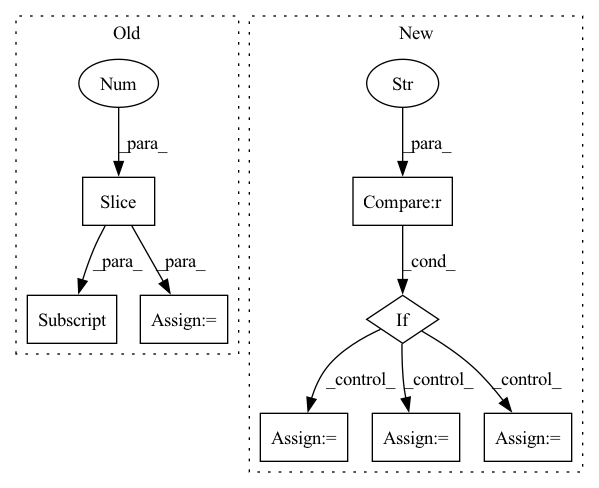

Pattern ID :12265
Before Change
])
old_model.load_weights(weights)
// Remove prediction layers
old_model = old_model.layers[:-1] [0]
old_model.save_weights(weights_notop)
// Load model weights with no topAfter Change
if weights == "cytoimagenet":
// Specify number of classes based on dset
if dset == "toy_20" :
num_classes = 20
elif dset == "toy_50":
num_classes = 50
else:
num_classes = 894
// Load weights
weights_str = f"{weights_dir}/{init}_init/{dset}/{weights_filename}"In pattern: SUPERPATTERN
Frequency: 3
Non-data size: 8
Instances Fragment ID: 41610107
Project Name: stan-hua/cytoimagenet
Commit Name: 58d66c4cc6eed607192ce85534d29f8f8ca9fee4
Time: 2021-08-23
Author: stanley.hua@mail.utoronto.ca
File Name: scripts/model_evaluation.py
M Class Name: AnonimousClass
N Class Name: AnonimousClass
M Method Name: load_model(4)
N Method Name: load_model(1)
M Parent Class:
N Parent Class:
M File Name: scripts/model_evaluation.py
N File Name: scripts/model_evaluation.py
M Start Line: 67
M End Line: 123
N Start Line: 68
N End Line: 125
Before Change
@staticmethod
def parse_name(name: str, pretrained_dataset: str = "M", layer: int = 50) -> tuple[str, str, int]:
if name[:3] == "bit":
name = "BiT" + name[3:]
full_name_list: list[str] = re.findall(r"[0-9]+|[A-Za-z]+|_", name)
name_list = full_name_list[0].split("-")
if len(name_list) == 1:
name_list.append(pretrained_dataset)
name_list.append("R")
elif len(name_list) == 2:
if name_list[1] == "R":
name_list.insert(1, pretrained_dataset)
else:
name_list.append("R")
name_list[1] = name_list[1].upper()
name_list[2] = name_list[2].upper()
assert name_list[1] in ["S", "M", "L"] and name_list[2] == "R", name
pretrained_dataset = name_list[1]
layer = int(name_list[3])After Change
assert name_list[0] == "bit"
if len(name_list) != 1:
for element in name_list[1:]:
if element[0] == "r" :
sub_list = element[1:].split("x")
layer = int(sub_list[0])
if len(sub_list) == 2:
width_factor = int(sub_list[1])
else:
assert len(element) == 1
pretrained_dataset = element
return "-".join(["bit", pretrained_dataset, f"r{layer:d}x{width_factor:d}"])
def get_official_weights(self, **kwargs) -> OrderedDict[str, torch.Tensor]: Fragment ID: 41610110
Project Name: ain-soph/trojanzoo
Commit Name: d1791a5d2011850d8796399912be84c49dd5e788
Time: 2021-04-06
Author: ain-soph@live.com
File Name: trojanvision/models/bit.py
M Class Name: BiT
N Class Name: BiT
M Method Name: parse_name(4)
N Method Name: parse_name(3)
M Parent Class: ImageModel
N Parent Class: ImageModel
M File Name: trojanvision/models/bit.py
N File Name: trojanvision/models/bit.py
M Start Line: 49
M End Line: 67
N Start Line: 48
N End Line: 61
Before Change
shape = distogram.shape
n_bins = torch.ones(shape[-1] + 1) * min_t
n_bins[1:] = torch.tensor(bins)
// center - median
cum_dist = torch.cumsum(distogram, dim=-1)
central = torch.searchsorted(cum_dist, 0.5)
for i in range(shape[-1]):
central[central==i] = (n_bins[i]+n_bins[i+1])/2
// mask diagonal to 0 dist
central[np.arange(shape[-2]), np.arange(shape[-3])] = 0.
// provide weights
weights = torch.ones_like(central)
return central, weights
def mds_torch(dist_mat, weights=None, iters=10, tol=1e-5, verbose=2):After Change
// mask diagonal to 0 dist
central[np.arange(shape[-2]), np.arange(shape[-3])] = 0.
// provide weights
if wide == "var" :
weights = (distogram * (bins - central.unsqueeze(-1))**2).sum(dim=-1)
elif wide == "sqrt":
weights = (distogram * (bins - central.unsqueeze(-1))**2).sum(dim=-1).sqrt()
else:
weights = torch.zeros_like(central)
// rescale to 0-1. lower std / var --> weight=1
weights = 1 / (1+weights)
// TODO: rescale to 0-1? Fragment ID: 41610227
Project Name: lucidrains/alphafold2
Commit Name: 5013886fc413e143b7f3341db644d320a11c3804
Time: 2021-01-14
Author: ericacaide1@gmail.com
File Name: utils.py
M Class Name: AnonimousClass
N Class Name: AnonimousClass
M Method Name: center_distogram_torch(5)
N Method Name: center_distogram_torch(3)
M Parent Class:
N Parent Class:
M File Name: utils.py
N File Name: utils.py
M Start Line: 119
M End Line: 130
N Start Line: 110
N End Line: 139